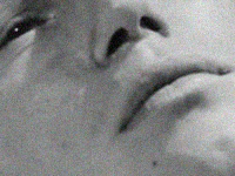
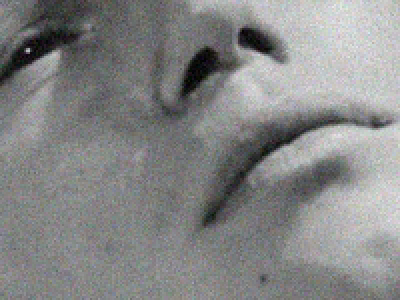
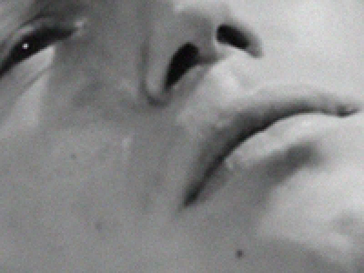
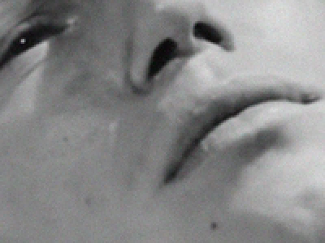
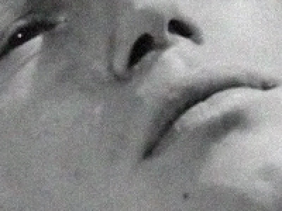
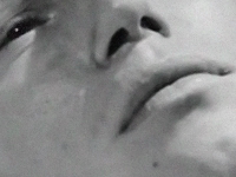
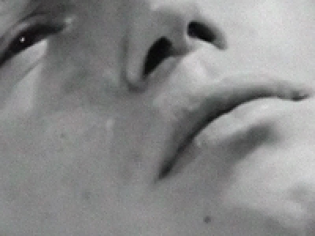
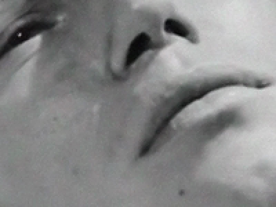

Issue #177 found Noise Reduction and Sharpen "not effective". The passes work, but their defaults are gentle and the controls that make them stronger are per-method jargon. In simple mode each method now has one Strength control (Light / Medium / Strong / Very strong) that sets the method's own parameters. Medium is each method's existing defaults (the user's decision: existing output does not change), and Light, Strong and Very strong were measured here. Advanced mode hides the control and shows the values it set.
thSCD1, havsfunc's 400): the block SAD of that much noise alone is over it,
so every frame read as a cut and was left alone. With thSCD1 800, tr 3 and thSAD 2000 the same clip
reaches 36.78 dB. A real hard cut is still found at every value up to 4000. A new parameter,
smDegrainThSCD1 (default 400, so no existing script changes), is raised by SMDegrain's Strong and Very strong.sigma only for its pfMode 0 prefilter
or a post pass, and VapourBox passes neither: every sigma from 2 to 12 gave identical output at every profile.
The Strength steps set MCTD's own profile (low / medium / high / very high). The dead control is task #141.Every output in this report was made by the worker itself (vapourbox-worker --config, FFV1, lossless), so the
numbers are for exactly what the app runs.
Clean sources cut from committed test footage, stored losslessly and retimed to exactly 25 fps
(build_fixtures.py). Noisy copies add Gaussian noise with the app's own Grain pass (AddGrain, animated,
luma σ, chroma σ/2). Soft copies (Sharpen) blur every plane with ffmpeg's gblur.
| Fixture | Picture | σ 2 | σ 4 | σ 6 | σ 9 |
|---|---|---|---|---|---|
| cam | 320×240 yuv420p | 2.02 / 1.96 | 4.00 / 3.80 | 5.99 / 5.64 | 8.90 / 8.37 |
| film | 640×480 yuv420p | 2.02 / 1.95 | 4.01 / 3.78 | 6.00 / 5.61 | 8.99 / 8.36 |
| dvbt | 720×288 yuv420p | 2.02 / 1.87 | 4.01 / 3.70 | 6.00 / 5.53 | 8.99 / 8.29 |
| vhs | 720×576 yuv422p | 2.00 / 2.41 | 3.96 / 4.08 | 5.91 / 5.86 | 8.82 / 8.58 |
Measured noise per fixture: luma RMS of noisy − clean / the worker's own noise score (--detect-noise-halo).
cam is small_clip.mp4 (camera, 320×240), film colorize_test.mp4 (640×480), dvbt the
top fields of the DVB-T broadcast clip, vhs interlaced_test.avi (used only for QTGMC's denoiser, which needs
deinterlacing on; its reference is the clean source through the same QTGMC with no denoising).
Correction, in place: the first fixtures kept their source rates (29.97 and 24 fps) in Matroska, whose 1 ms time base can't hold them exactly. The worker's source grid then repeated and dropped frames against ffmpeg's frame-by-frame reading, and an untouched passthrough read 33 dB instead of identical. Every fixture is now retimed to 25 fps; the passthrough is bit-exact on all four. No number below comes from the first fixtures.
cam, film,
dvbt, at noise σ 2, 4, 6, 9. PSNR rewards smoothing: a setting that wipes texture can score well. So each
setting's cost on a clean picture (the clean source through it, against itself) is measured too, and is what orders
"stronger" (more damage to a clean picture = stronger). SSIM is recorded in choice.json and agrees on the order.Per method (choose_steps.py): Medium is the current default. Every other step is the setting with the best
mean PSNR at its own level (noise σ 2 / — / 6 / 9, blur 0.5 / — / 1.2 / 1.6), among settings on the right side of its
neighbours (Light weaker than Medium, Very strong stronger than Medium, Strong between). Any candidate within
0.15 dB of the best counts as equal; among equals a value a built-in preset uses wins, then the weakest, then
the better at the heaviest level, then the smallest values. Light may not have a larger temporal radius than Medium (it
would be slower). Each step sets the same parameters, so choosing Light after Very strong resets everything.
Exceptions, each for a measured reason, are stated with the method.
Each cell: the step's luma PSNR (dB) / the best any measured setting reached at that level. The shaded cell is the level the step was chosen at. "clean in" is the cost on a clean picture (higher is gentler).
| Step | Values | σ 2 | σ 4 | σ 6 | σ 9 | clean in |
|---|---|---|---|---|---|---|
| Input (noisy) | 42.03 | 36.08 | 32.57 | 29.08 | — | |
| Light | Luma Threshold 200, Chroma Threshold 100, Scene-change threshold 400, Temporal Radius 2 | 45.48 / 46.94 | 36.50 / 42.64 | 32.62 / 39.80 | 29.08 / 36.78 | 53.81 |
| Medium | Luma Threshold 300, Chroma Threshold 150, Scene-change threshold 400, Temporal Radius 2 | 46.32 / 46.94 | 38.81 / 42.64 | 33.09 / 39.80 | 29.09 / 36.78 | 52.02 |
| Strong | Luma Threshold 1200, Chroma Threshold 600, Scene-change threshold 800, Temporal Radius 3 | 45.39 / 46.94 | 42.41 / 42.64 | 39.80 / 39.80 | 35.78 / 36.78 | 47.67 |
| Very strong | Luma Threshold 2000, Chroma Threshold 1000, Scene-change threshold 800, Temporal Radius 3 | 44.78 / 46.94 | 42.06 / 42.64 | 39.68 / 39.80 | 36.78 / 36.78 | 46.84 |
Grid: tr 1–4 × thSAD 150–4000 at thSCD1 400, then tr 2–3 × thSAD 400–2000 × thSCD1 800 / 1200. tr 4 measured identical to tr 3 (havsfunc stops at 3) and was dropped. thSCD1 800 and 1200 gave identical output everywhere, and both identical to 400 on a clean picture and at σ ≤ 6.
Light is tr 2 / 200, not the old fromPreset(light) tr 1 / 200, which was 1.1 dB worse at σ 2. The DV Camcorder, Low-Light and SD Tape → HD presets used that and now use Light (output changes, slightly stronger and slower).
| Noise | thSAD | thSCD1 400 | 800 | 1200 | 2000 | 4000 |
|---|---|---|---|---|---|---|
| σ 0 | 800 | 48.76 / 42.67 | 48.76 / 42.67 | 48.76 / 42.67 | 48.76 / 42.67 | 48.76 / 42.67 |
| σ 0 | 2000 | 47.60 / 38.46 | 47.60 / 38.46 | 47.60 / 38.46 | 47.60 / 38.46 | 47.60 / 38.46 |
| σ 6 | 800 | 39.17 / 37.93 | 39.17 / 37.93 | 39.17 / 37.93 | 39.17 / 37.93 | 39.17 / 37.93 |
| σ 6 | 2000 | 39.84 / 37.28 | 39.84 / 36.46 | 39.84 / 36.46 | 39.84 / 36.46 | 39.84 / 36.46 |
| σ 9 | 800 | 29.15 / 29.07 | 34.57 / 33.92 | 34.57 / 33.92 | 34.57 / 33.92 | 34.57 / 33.92 |
| σ 9 | 2000 | 29.10 / 29.07 | 36.85 / 34.83 | 36.85 / 34.83 | 36.85 / 34.83 | 36.85 / 34.83 |
A hard cut to another shot (probe_scd.py): mean luma PSNR away from the cut / the lowest of the six frames around it, tr 3. Every thSCD1 from 800 to 4000 gives identical output: the cut is still detected, since its block SAD is far above all of them. The one cost is at σ 6, thSAD 2000: the frames at the cut 0.8 dB lower than at 400. At σ 9 the default 400 leaves the whole clip noisy.




Frame 30 of film with σ 6 noise, 200×150 at 1:1, shown 2× (nearest neighbour). Click for full size.
| Step | Values | σ 2 | σ 4 | σ 6 | σ 9 | clean in |
|---|---|---|---|---|---|---|
| Input (noisy) | 42.03 | 36.08 | 32.57 | 29.08 | — | |
| Light | Settings low | 47.49 / 47.50 | 39.47 / 45.36 | 32.61 / 43.34 | 29.08 / 38.90 | 54.82 |
| Medium | Settings medium | 47.50 / 47.50 | 39.76 / 45.36 | 34.49 / 43.34 | 29.16 / 38.90 | 54.11 |
| Strong | Settings high | 47.24 / 47.50 | 45.36 / 45.36 | 41.10 / 43.34 | 33.12 / 38.90 | 48.28 |
| Very strong | Settings very high | 45.94 / 47.50 | 44.78 / 45.36 | 43.34 / 43.34 | 38.90 / 38.90 | 46.70 |
Strength sets the profile only. Sigma is inert (identical results for 2–12 at every profile and radius; havsfunc uses it only for pfMode 0 or post > 0). Radius moved results far less than the profile and mostly costs time, so it stays its own control at its default (2).
Frame 30 of film with σ 6 noise, 200×150 at 1:1, shown 2× (nearest neighbour). Click for full size.
| Step | Values | σ 2 | σ 4 | σ 6 | σ 9 | clean in |
|---|---|---|---|---|---|---|
| Input (noisy) | 41.51 | 36.15 | 32.00 | 28.87 | — | |
| Light | EZ Denoise 2.0 | 42.53 / 42.53 | 37.20 / 38.92 | 32.59 / 35.43 | 29.19 / 32.73 | 45.61 |
| Medium | EZ Denoise 5.0 | 41.73 / 42.53 | 38.86 / 38.92 | 34.35 / 35.43 | 30.51 / 32.73 | 42.93 |
| Strong | EZ Denoise 8.0 | 40.72 / 42.53 | 38.73 / 38.92 | 35.31 / 35.43 | 31.99 / 32.73 | 41.57 |
| Very strong | EZ Denoise 10.0 | 40.15 / 42.53 | 38.43 / 38.92 | 35.43 / 35.43 | 32.73 / 32.73 | 40.87 |
Its default was EZDenoise 0, which does nothing; Medium is measured like the other steps and becomes the default. Very strong is at the top of the grid (10), and σ 9 was still improving there. On the interlaced vhs fixture only.
| Step | Values | σ 2 | σ 4 | σ 6 | σ 9 | clean in |
|---|---|---|---|---|---|---|
| Input (noisy) | 42.03 | 36.08 | 32.57 | 29.08 | — | |
| Light | Grain restore 14, Strength 5, Motion threshold 200 | 43.46 / 43.56 | 37.53 / 39.90 | 33.46 / 37.86 | 29.99 / 34.89 | 49.67 |
| Medium | Grain restore 14, Strength 20, Motion threshold 400 | 39.95 / 43.56 | 38.51 / 39.90 | 36.69 / 37.86 | 30.75 / 34.89 | 40.68 |
| Strong | Grain restore 14, Strength 20, Motion threshold 900 | 39.50 / 43.56 | 38.15 / 39.90 | 36.67 / 37.86 | 34.06 / 34.89 | 40.20 |
| Very strong | Grain restore 0, Strength 20, Motion threshold 900 | 40.80 / 43.56 | 39.38 / 39.90 | 37.86 / 37.86 | 34.81 / 34.89 | 41.77 |
mClean's Grain restore (rn) puts grain back, which costs a clean picture while denoising less, so the clean cost doesn't order its strength. Light to Strong keep the default rn 14. Above Medium the measurement plateaus (strength is already at its maximum, 20, by default; a higher motion threshold helps only at σ 9), so Very strong is the best at σ 9 that puts no grain back (rn 0). Strength sets Strength, Motion threshold and Grain restore.




Frame 30 of film with σ 6 noise, 200×150 at 1:1, shown 2× (nearest neighbour). Click for full size.
Each cell: luma PSNR against the unblurred original (dB) / the best any setting reached. "change" is the mean absolute luma change on a sharp picture (8-bit levels), "halo" the worker's halo score on it (negative = none found).
| Step | Values | blur 0.5 | blur 0.8 | blur 1.2 | blur 1.6 | change | halo |
|---|---|---|---|---|---|---|---|
| Input (blurred) | 45.90 | 39.85 | 35.83 | 33.56 | 0 | ||
| Light | Overshoot 8, Strength 50, Undershoot 8 | 47.09 / 47.09 | 41.27 / 43.24 | 36.46 / 39.46 | 33.85 / 36.09 | 0.40 | -5.2 |
| Medium | Overshoot 1, Strength 100, Undershoot 1 | 45.37 / 47.09 | 41.89 / 43.24 | 37.07 / 39.46 | 34.13 / 36.09 | 0.47 | -5.4 |
| Strong | Overshoot 8, Strength 400, Undershoot 8 | 38.95 / 47.09 | 40.20 / 43.24 | 39.46 / 39.46 | 35.79 / 36.09 | 1.12 | -4.0 |
| Very strong | Overshoot 8, Strength 500, Undershoot 8 | 38.27 / 47.09 | 39.48 / 43.24 | 39.35 / 39.46 | 36.09 / 36.09 | 1.22 | -3.9 |
Grid: strength 50–500 × over/undershoot 1, 2, 4, 8 (equal). Strength above the old maximum (200) scored best at the heavier blurs, so the schema's maximum rises. Light is strength 50 with overshoot 8: at a slight blur a gentle strength that may overshoot restored more than a stronger one held to 1 level, which is what made the old default barely visible (issue #177). The VHS Cleanup preset (80 / 1) now uses Light.
Frame 30 of film blurred by σ 1.2 px, 200×150 at 1:1, shown 2×.
| Step | Values | blur 0.5 | blur 0.8 | blur 1.2 | blur 1.6 | change | halo |
|---|---|---|---|---|---|---|---|
| Input (blurred) | 45.90 | 39.85 | 35.83 | 33.56 | 0 | ||
| Light | CAS Sharpness 0.4 | 49.63 / 50.03 | 41.28 / 42.61 | 36.37 / 37.75 | 33.82 / 34.72 | 0.28 | -5.5 |
| Medium | CAS Sharpness 0.5 | 49.85 / 50.03 | 41.51 / 42.61 | 36.47 / 37.75 | 33.88 / 34.72 | 0.34 | -5.4 |
| Strong | CAS Sharpness 0.8 | 49.05 / 50.03 | 42.61 / 42.61 | 36.95 / 37.75 | 34.15 / 34.72 | 0.70 | -4.9 |
| Very strong | CAS Sharpness 1.0 | 41.35 / 50.03 | 42.13 / 42.61 | 37.75 / 37.75 | 34.72 / 34.72 | 1.70 | -3.6 |
CAS stops at 1.0 (the plugin's limit), which is the best at the heaviest blur, so Very strong was chosen before Strong. The SD Tape → HD preset (0.3) now uses Light, 0.4.
Frame 30 of film blurred by σ 1.2 px, 200×150 at 1:1, shown 2×.
| Step | Values | blur 0.5 | blur 0.8 | blur 1.2 | blur 1.6 | change | halo |
|---|---|---|---|---|---|---|---|
| Input (blurred) | 45.90 | 39.85 | 35.83 | 33.56 | 0 | ||
| Light | Depth 8 | 37.80 / 41.58 | 36.93 / 38.65 | 35.17 / 35.64 | 33.54 / 33.61 | 0.71 | -6.0 |
| Medium | Depth 16 | 33.94 / 41.58 | 34.14 / 38.65 | 33.81 / 35.64 | 33.02 / 33.61 | 1.31 | -5.7 |
| Strong | Depth 24 | 32.16 / 41.58 | 32.43 / 38.65 | 32.52 / 35.64 | 32.27 / 33.61 | 1.77 | -5.3 |
| Very strong | Depth 48 | 29.28 / 41.58 | 29.42 / 38.65 | 29.76 / 35.64 | 30.06 / 33.61 | 2.82 | -4.6 |
PSNR cannot judge this method. It warps pixels toward edges instead of raising contrast, and PSNR against the sharp original reads moved pixels as error: no depth scored above the blurred input except marginally at blur 1.6. Its steps are an even ladder of visible effect instead, the depth whose change is nearest ½, 1, 1.5 and 2× Medium's (16). Judge it by the crops.
Frame 30 of film blurred by σ 1.2 px, 200×150 at 1:1, shown 2×.
For a source the worker already judged noisy (its noiseHigh), the Noise Reduction panel says which step usually
suits it. Advisory only: it never changes a value. Thresholds are halfway between the worker's own reading of the levels each
step was chosen at (σ 4, 6, 9 read as 3.76, 5.59, 8.34; it reads white noise about 6% low):
Strong from 4.7, Very strong from 7.0, Medium below. Below the worker's threshold nothing is
said, since a low score is not evidence (codec-skipped blocks read noiseless).
parameterPresets: in
simple mode it replaces the controls it sets. The step isn't stored; the dropdown shows the step the values match, and
"Custom" when none does.cd docs/reports/issue-177-strength-mapping/scripts export SCRATCH=/path/to/scratch # ~2 GB of fixtures and outputs python3 build_fixtures.py # data/fixtures.json python3 probe_nr.py # data/nr_runs.json (~3 h on an M1) python3 probe_scd.py # data/scd.json python3 probe_sharpen.py # data/sharpen_runs.json (~1.5 h) python3 choose_steps.py # data/steps.json, data/choice.json python3 make_images.py # img/ python3 fill_report.py # index.html
Needs the repo's deps bundle in deps/<platform> (or $DEPS) and a worker build
(cd worker && cargo build; $WORKER overrides). Python 3 standard library only.
data/steps.json is what the app's schemas are pinned to (strength_presets_test.dart,
test_272).